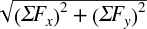
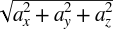
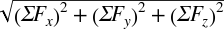

Chapter 4. Kinetics
Recall that kinetics is the study of the motion of bodies, including the forces that act on them. It’s now time that we combine the material presented in the earlier chapters—namely, kinematics and forces—to study the subject of kinetics. As in Chapter 2 on kinematics, we’ll first discuss particle kinetics and then go on to discuss rigid-body kinetics.
In kinetics, the most important equation that you must consider is Newton’s second law:
| F = ma |
When rigid bodies are involved, you must also consider that the forces acting on the body will tend to cause rotation of the body in addition to translation. The basic relationship here is:
| Mcg = I α |
where Mcg is the vector sum of all moments (torques) acting on the body, I is the body moment of inertia tensor, and α is the angular acceleration.
Collectively, these two equations are referred to as the equations of motion.
There are two types of problems that you will encounter in kinetics. One type is where you know the force(s) acting on the body, or you can estimate them, and you must solve for the resulting acceleration of the body (and subsequently its velocity and displacement). Another type is where you know the body’s acceleration, or can readily determine it using kinematics, and you must solve for the force(s) acting on the body.
This chapter will primarily discuss the first type of problem, where you know the force(s) acting on the body, which is more common to in-game physics. The second type of problem has become important with the advent of motion-based controllers such as the Sony SixAxis and Nintendo Wii Remote. These controllers rely on digital accelerometers to directly measure the acceleration of a controller. While this is most often used to find the controller’s orientation, it is also possible to integrate the time history of these sensor values to determine velocity and position. Additionally, if you know the mass of the controller or device, you can find the force. Accelerometers are found in most smartphones as well, which also allows for the use of kinematic-based input. So as to not confuse the two types of problems, we’ll discuss the second type, with the acceleration as input, in detail in Chapter 21.
Let us stress that you must consider the sum of all of the forces acting on the body when solving kinetics problems. These include all applied forces and all reaction forces. Aside from the computational difficulties of solving the equations of motion, one of the more challenging aspects of kinetics is identifying and properly accounting for all of these forces. In later chapters, you’ll look at specific problems where we’ll investigate the particular forces involved. For now, and for the purpose of generality, let’s stick with the idealized forces introduced in the previous chapter.
Here is the general procedure for solving kinetics problems of interest to us:
Calculate the body’s mass properties (mass, center of mass, and moment of inertia).
Identify and quantify all forces and moments acting on the body.
Take the vector sum of all forces and moments.
Solve the equations of motion for linear and angular accelerations.
Integrate with respect to time to find linear and angular velocity.
Integrate again with respect to time to find linear and angular displacement.
This outline makes the solution to kinetics problems seem easier than it actually is because there are a number of complicating factors that you’ll have to overcome. For example, in many cases the forces acting on a body are functions of displacement, velocity, or acceleration. This means that you’ll have to use iterative techniques in order to solve the equations of motion. Further, since you most likely will not be able to derive closed-form solutions for acceleration, you’ll have to numerically integrate in order to estimate velocity and displacement at each instant of time under consideration. These computational aspects will be addressed further in Chapter 7 through Chapter 13.
Particle Kinetics in 2D
As in particle kinematics, in particle kinetics you need to consider only the linear motion of the particle. Thus, the equations of motion will consist of equations of the form F = ma, where motion in each coordinate direction will have its own equation. The equations for 2D particle motion are:
| ΣFx = m ax |
| ΣFy = m ay |
where ΣFx means the sum of all forces in the x-direction, ΣFy means the sum of all forces in the y-direction, ax is the acceleration in the x-direction, and ay is the acceleration in the y-direction.
The resultant force and acceleration vectors are:
| a = ax i + ay j |
| ΣF = ΣFx i + ΣFy j |
| ΣF =  |
Let’s look at an example that appears simple but demonstrates the complexity of finding closed-form solutions. A ship floating in water, initially at rest, starts up its propeller generating a thrust, T, which starts the ship moving forward. Assume that the ship’s forward speed is slow and the resistance to its motion can be approximated by:
| R = –C v |
where R is the total resistance, C is a drag coefficient, v is the ship speed, and the minus sign indicates that this resistive force opposes the forward motion of the ship. Find formulas for the ship’s speed, acceleration, and distance traveled as functions of time, assuming that the propeller thrust and resistance force vectors act on a line of action passing through the ship’s center of gravity. This assumption lets you treat the ship as a particle instead of a rigid body.
The first step in solving this problem is to identify all of the forces acting on the ship. Figure 4-1 shows a free-body diagram of the ship with all of the forces acting on it—namely, the propeller thrust, T; resistance, R; the ship’s weight, W; and buoyancy, B.
Notice here that the buoyancy force is exactly equal in magnitude to the ship’s weight and opposite in direction; thus, these forces cancel each other out and there will be no motion in the y-direction. This must be the case if the ship is to stay afloat. This observation effectively reduces the problem to a one-dimensional problem with motion in the x-direction, only where the forces acting in the x-direction are the propeller thrust and resistance.
Now you can write the equation (for motion in the x-direction) using Newton’s second law, as follows:
| ΣF = m a |
| T – R = m a |
| T – (C v) = m a |
Where a is the acceleration in the x-direction, and v is the speed in the x-direction.
The next step is to integrate this equation of motion in order to derive a formula for the speed of the ship as a function of time. To do this, you must make the substitution a = dv/dt, rearrange, integrate, and then solve for speed as follows:
| T – (C v) = m (dv/dt) |
| dt = (m / (T–Cv)) dv |
| ∫(0 to t) dt = ∫(v1 to v2) (m / (T–Cv)) dv |
| t – 0 = –(m/C) ln(T–Cv) | (v1 to v2) |
| t = –(m/C) ln(T–Cv2) + (m/C) ln(T–Cv1) |
| t = (m/C) [ln(T–Cv1) – ln(T–Cv2)] |
| (C/m) t = ln [(T–Cv1) / (T–Cv2)] |
| e(C/m) t = e ln [(T–Cv1) / (T–Cv2)] |
| e(C/m) t = (T–Cv1) / (T–Cv2) |
| (T–Cv2) = (T–Cv1) e–(C/m)t |
| v2 = (T/C) – e–(C/m) t (T/C – v1) |
where v1 is the initial ship speed (which is constant) and v2 is the ship speed at time t. v2 is what you’re after here, since it tells you how fast the ship is traveling at any instant of time.
Now that you have an equation for speed as a function of time, you can derive an equation for displacement (distance traveled, in this case) as a function of time. Here, you’ll have to recall the formula v dt = ds, substitute the previous formula for speed, integrate, rearrange, and solve for distance traveled. These steps are shown here:
| v dt = ds |
| v2 dt = ds |
| ((T/C) – e–(C/m) t (T/C – v1)) dt = ds |
| ∫(0 to t) (T/C) – e–(C/m) t (T/C – v1) dt = ∫(s1 to s2) ds |
| (T/C) ∫(0 to t) dt – (T/C – v1) ∫(0 to t) e–(C/m) t dt = s2 – s1 |
| [(T/C) t + ((T/C) – v1)(m/C) e–(C/m) t] (0 to t) = s2 – s1 |
| [(T/C) t + ((T/C) – v1)(m/C) e–(C/m) t] – [0 + ((T/C) – v1)(m/C)] = s2 – s1 |
| (T/C) t + (T/C – v1) (m/C) e–(C/m) t – (T/C – v1) (m/C) = s2 – s1 |
| s2 = s1 + (T/C) t + (T/C – v1) (m/C) e–(C/m) t – (T/C – v1) (m/C) |
Finally you can write an equation for acceleration by going back to the original equation of motion and solving for acceleration:
| T – (C v) = m a |
| a = (T – (C v)) / m |
where:
| v = v2 = (T/C) – e–(C/m) t (T/C – v1) |
In summary, the equations for velocity, distance traveled, and acceleration are as follows:
| v2 = (T/C) – e–(C/m) t (T/C – v1) |
| s2 = s1 + (T/C) t + (T/C – v1) (m/C) e–(C/m) t – (T/C – v1) (m/C) |
| a = (T – (C v)) / m |
To illustrate the motion of the ship further, we’ve plotted the ship’s speed, distance traveled, and acceleration versus time, as shown in Figure 4-2, Figure 4-3, and Figure 4-4. To facilitate these illustrations, we’ve assumed the following:
The initial ship speed and displacement are 0 at time 0.
The propeller thrust is 20,000 thrust units.
The ship’s mass is 10,000 mass units.
The drag coefficient is 1,000.
You’ll notice that the ship’s speed approaches the steady state speed of 20 speed units, assuming that the propeller thrust remains constant. This corresponds to a reduction in acceleration from a maximum acceleration at time 0 to no acceleration once the steady speed is achieved.
This example illustrates how to set up the differential equations of motion and integrate them to find velocity, displacement, and acceleration. In this case, you were able to find a closed-form solution—that is, you were able to integrate the equations symbolically to derive new ones. You could do this because we imposed enough constraints on the problem to make it manageable. But you can readily see that if there were more forces acting on the ship, or if the thrust were not held constant but was some function of speed, or if the resistance were a function of speed squared, and so on, the problem gets increasingly complicated—making a closed-form solution much more difficult, if not impossible.
Particle Kinetics in 3D
As in kinematics, extending the equations of motion for a particle to three dimensions is easy to do. You simply need to add one more component and will end up with three equations as follows:
| ΣFx = m ax |
| ΣFy = m ay |
| ΣFz = m az |
The resultant force and acceleration vectors are now:
| a = ax i + ay j + az k |
| a =  |
| ΣF = ΣFx i + ΣFy j + ΣFz k |
| ΣF =  |
To hammer these concepts home, we want to present another example.
Let’s go back to the cannon example program discussed in Chapter 2. In that example, we made some simplifying assumptions so we could focus on the kinematics of the problem without complicating it too much. One of the more significant assumptions we made was that there was no drag acting on the projectile as it flew through the air. Physically, this would be valid only if the projectile were moving through a vacuum, which, of course, is unlikely here on Earth. Another significant assumption we made was that there was no wind to act on the projectile and affect its course. These two considerations, drag and wind, are important in real-life projectile problems, so to make this example a little more interesting—and more challenging to the user if this were an actual game—we’ll add these two considerations now.
First, assume that the projectile is a sphere and the drag force acting on it as it flies through the air is a function of some drag coefficient and the speed of the projectile. This drag force can be written as follows:
| Fd = –Cd v |
| Fd = –Cd vx i – Cd vy j – Cd vz k |
where Cd is the drag coefficient, v is the velocity of the projectile (vx, vy, and vz are its components), and the minus sign means that this drag force opposes the projectile’s motion. Actually, we’re cheating a bit here since in reality the fluid dynamic drag would be more a function of speed squared. We’re doing this here to facilitate a closed-form solution. Also, the drag coefficient here would be determined experimentally for each shape. Later, we’ll discuss how experimental data is used on basic shapes to give data for similar ships.
Second, assume that the projectile is subjected to a blowing wind, the force of which is a function of some drag coefficient and the wind speed. This force can be written as follows:
| Fw = –Cw vw |
| Fw = –Cw vwx i – Cw vwz k |
where Cw is the drag coefficient, vw is the wind speed, and the minus sign means that this force opposes the projectile’s motion when the wind is blowing in a direction opposite of the projectile’s direction of motion. When the wind is blowing with the projectile—say, from behind it—then the wind will actually help the projectile along instead of impede its motion. In general, Cw is not necessarily equal to the Cd shown in the drag formula. Referring to Figure 2-3, we’ll define the wind direction as measured by the angle γ. The x and z components of the wind force can now be written in terms of the wind direction, γ, as follows:
| Fwx = Fw cos γ = –(Cw vw) cos γ |
| Fwz = Fw sin γ = –(Cw vw) sin γ |
We ignored the y-direction as we assume the wind is flowing parallel to the ground. Finally, let’s apply a gravitational force to the projectile instead of specifying the effect of gravity as a constant acceleration, as we did in Chapter 2. This allows you to include the force due to gravity in the equations of motion. Assuming that the projectile is relatively close to sea level, the gravitational force can be written as:
| Fg = –m g j |
where the minus sign indicates that it acts in the negative y-direction (pulling the projectile toward the earth), and g on the righthand side of this equation is the acceleration due to gravity at sea level.
Now that all of the forces have been identified, you can write the equations of motion in each coordinate direction:
| ΣFx = Fwx + Fdx = m (dvx/dt) |
| ΣFy = Fdy + Fgy = m (dvy/dt) |
| ΣFz = Fwz + Fdz = m (dvz/dt) |
Note here that we already made the substitution dv/dt for acceleration in each equation. Following the same procedure shown in the previous section, you now need to integrate each equation of motion twice—once to find an equation for velocity as a function of time, and another to find an equation for displacement as a function of time. As before, we’ll show you how this is done component by component.
You might be asking yourself, where’s the thrust force from the cannon that propels the projectile in the first place? In this example, we’re looking specifically at the motion of the projectile after it has left the muzzle of the cannon, where there is no longer a thrust force acting on the projectile; it isn’t self-propelled. To account for the effect of the cannon thrust force, which acts over a very short period of time while the projectile is within the cannon, you have to consider the muzzle velocity of the projectile when it initially leaves the cannon. The components of the muzzle velocity in the coordinate directions will become initial velocities in each direction, and they will be included in the equations of motion once they’ve been integrated. The initial velocities will show up in the velocity and displacement equations just like they did in the example in Chapter 2. You’ll see this in the following sections.
X Components
The first step is to make the appropriate substitutions for the force terms in the equation of motion, and then integrate to find an equation for velocity.
| –Fwx – Fdx = m(dvx/dt) |
| –(Cw vw cos γ) – Cd vx = m dvx/dt |
| dt = m dvx / [–(Cw vw cos γ) – Cd vx] |
| ∫(0 to t) dt = ∫(vx1 to vx2) –m / [(Cw vw cos γ) + Cd vx] dvx |
| t = –(m/Cd) ln((Cw vw cos γ) + Cd vx)| (vx1 to vx2) |
| t = –(m/Cd) ln((Cw vw cos γ) + Cd vx2) + (m/Cd) ln((Cw vw cos γ) + Cd vx1) |
| (Cd/m) t = ln[((Cw vw cos γ) + Cd vx1) / ((Cw vw cos γ) + Cd vx2)] |
| e(Cd /m) t = eln[((Cw vw cos γ) + Cd vx1) / ((Cw vw cos γ) + Cd vx2)] |
| e(Cd/m) t = ((Cw vw cos γ) + Cd vx1) / ((Cw vw cos γ) + Cd vx2) |
| ((Cw vw cos γ) + Cd vx2) = ((Cw vw cos γ) + Cd vx1) e–(Cd/m) t |
| vx2 = (1/Cd) [ e(–Cd/m) t (cw vw cos γ + Cd vx1) – (Cw vw cos γ)] |
To get an equation for displacement as a function of time, you need to recall the equation v dt = ds, make the substitution for v (using the preceding equation) and then integrate one more time.
| vx2 dt = dsx |
| (1/Cd) [e(–Cd/m) t (cw vw cos γ + Cd vx1) – (cw vw cos γ)] dt = dsx |
| ∫(0 to t) (1/Cd) [e(–Cd/m) t (cw vw cos γ + Cd vx1) – (cw vw cos γ)] dt = |
| = ∫(sx1 to sx2) dsx |
| sx2 = [(m/Cd) e(–Cd/m) t (–(Cw vw cos γ) / Cd – vx1) – ((Cw vw cos γ) / Cd) t] – |
| [(m/Cd) (–(Cw vw cos γ) / Cd – vx1)] + sx1 |
Yes, these equations are ugly. Just imagine if we hadn’t made the simplifying assumption that drag is proportional to speed and not speed squared! You would have ended up with some really nice equations with an arctan term or two thrown in.
Y Components
For the y components, you need to follow the same procedure shown earlier for the x components, but with the appropriate y-direction forces. Here’s what it looks like:
| –Fdy – Fgy = m (dvy/dt) |
| –Cd vy – m g = m (dvy/dt) |
| ∫(0 to t) dt = –m ∫(vy1 to vy2) 1/(Cd vy + m g) dvy |
| vy2 = (1/Cd) e(–Cd/m)t (Cd vy1 + m g) – (m g)/Cd |
Now that you have an equation for velocity, you can proceed to get an equation for displacement as before:
| vy2 dt = dsy |
| [(1/Cd) e(–Cd/m)t (Cd vy1 + m g) – (m g)/Cd] dt = dsy |
| ∫(0 to t) [(1/Cd) e(–Cd/m)t (Cd vy1 + m g) – (m g)/Cd] dt = ∫(sy1 to sy2) dsy |
| sy2 = sy1 + [–(vy1 + (m g)/Cd) (m/Cd) e(–Cd/m)t – t (m g)/Cd] + [(m/Cd)(vy1 + (m g)/Cd)] |
OK, that’s two down and only one more to go.
Z Components
With the z component, you get a break. You’ll notice that the equations of motion for the x and z components look almost the same with the exception of the x and z subscripts and the sine versus cosine terms. Taking advantage of this fact, you can simply copy the x component equations and replace the x subscript with a z and the cosine terms with sines and be done with it:
| vz2 = (1/Cd) [e(–Cd/m)t (cw vw sin γ + Cd vz1) – (cw vw sin γ)] |
| sz2 = [(m/Cd) e(–Cd/m)t (–(Cw vw sin γ) / Cd – vz1) – ((Cw vw sin γ)/Cd) t] – |
| [(m/Cd) (–(Cw vw sin γ)/Cd – vz1)] + sz1 |
Cannon Revised
Now that you have some new equations for the projectile’s
displacement in each coordinate direction, you can go to the cannon
example source code and replace the old displacement calculation
formulas with the new ones. Make the changes in the DoSimulation function as follows:
//--------------------------------------------------------------------------------//
int DoSimulation(void)
//--------------------------------------------------------------------------------//
{
.
.
.
// new local variables:
double sx1, vx1;
double sy1, vy1;
double sz1, vz1;
.
.
.
// Now we can calculate the position vector at this time
// Old position vector commented out:
//s.i = Vm * cosX * time + xe;
//s.j = (Yb + L * cos(Alpha*3.14/180)) + (Vm * cosY * time) −
(0.5 * g * time * time);
//s.k = Vm * cosZ * time + ze;
// New position vector calculations:
sx1 = xe;
vx1 = Vm * cosX;
sy1 = Yb + L * cos(Alpha * 3.14/180);
vy1 = Vm * cosY;
sz1 = ze;
vz1 = Vm * cosZ;
s.i =((m/Cd) * exp(-(Cd * time)/m) * ((-Cw * Vw * cos(GammaW * 3.14/180))/Cd −
vx1) - (Cw * Vw * cos(GammaW * 3.14/180) * time) / Cd ) -
( (m/Cd) * ((-Cw * Vw * cos(GammaW * 3.14/180))/Cd - vx1) ) + sx1;
s.j = sy1 + ( -(vy1 + (m * g)/Cd) * (m/Cd) * exp(-(Cd*time)/m) −
(m * g * time) / Cd ) + ( (m/Cd) * (vy1 + (m * g)/Cd) );
s.k =((m/Cd) * exp(-(Cd * time)/m) * ((-Cw * Vw * sin(GammaW * 3.14/180))/Cd −
vz1) - (Cw * Vw * sin(GammaW * 3.14/180) * time) / Cd ) -
( (m/Cd) * ((-Cw * Vw * sin(GammaW * 3.14/180))/Cd - vz1) ) + sz1;
.
.
.
}To take into account the cross wind and drag, you’ll need to add some new global variables to store the wind speed and direction, the mass of the projectile, and the drag coefficients. You’ll also have to add some controls in the dialog window so that you can change these variables when you run the program. Figure 4-5 shows how we added these interface controls in the upper-right corner of the main window.
We also added these lines to the DemoDlgProc function to handle the new wind
speed and direction values:
//---------------------------------------------------------------------------------//
LRESULT CALLBACK DemoDlgProc(HWND hDlg, UINT message, WPARAM wParam, LPARAM lParam)
//---------------------------------------------------------------------------------//
{
.
.
.
case WM_INITDIALOG:
.
.
.
// New variables:
sprintf( str, "%f", m );
SetDlgItemText(hDlg, IDC_M, str);
sprintf( str, "%f", Cd );
SetDlgItemText(hDlg, IDC_CD, str);
sprintf( str, "%f", Vw );
SetDlgItemText(hDlg, IDC_VW, str);
sprintf( str, "%f", GammaW );
SetDlgItemText(hDlg, IDC_GAMMAW, str);
sprintf( str, "%f", Cw );
SetDlgItemText(hDlg, IDC_CW, str);
.
.
.
case IDC_REFRESH:
.
.
.
// New variables:
GetDlgItemText(hDlg, IDC_M, str, 15);
m = atof(str);
GetDlgItemText(hDlg, IDC_CD, str, 15);
Cd = atof(str);
GetDlgItemText(hDlg, IDC_VW, str, 15);
Vw = atof(str);
GetDlgItemText(hDlg, IDC_GAMMAW, str, 15);
GammaW = atof(str);
GetDlgItemText(hDlg, IDC_CW, str, 15);
Cw = atof(str);
.
.
.
case IDC_FIRE:
.
.
.
// New variables:
GetDlgItemText(hDlg, IDC_M, str, 15);
m = atof(str);
GetDlgItemText(hDlg, IDC_CD, str, 15);
Cd = atof(str);
GetDlgItemText(hDlg, IDC_VW, str, 15);
Vw = atof(str);
GetDlgItemText(hDlg, IDC_GAMMAW, str, 15);
GammaW = atof(str);
GetDlgItemText(hDlg, IDC_CW, str, 15);
Cw = atof(str);
.
.
.
}After playing with this example program, you should readily see that the trajectory of the projectile is noticeably different from that typically obtained in the original example. By adjusting the values of the wind speed, direction, and drag coefficients, you can dramatically affect the projectile’s trajectory. If you set the wind speed to 0 and the drag coefficients to 1, the trajectory will look like that obtained in the original example, where wind and drag were not taken into account. Be careful, though: don’t set the drag coefficient to 0 because this will result in a “divide by zero” error. We didn’t put the exception handler in the program, but you can see that it will happen by looking at the displacement vector formulas where the drag coefficient appears in the denominator of several terms.
From a user’s perspective, if this were a video game, the problem of hitting the target becomes much more challenging when wind and drag are taken into account. The wind element is particularly interesting because you can change the wind speed and direction during game play, forcing the user to pay careful attention to the wind in order to accurately hit the target.
Rigid-Body Kinetics
You already know from your study of kinematics in Chapter 2 that dealing with rigid bodies adds rotation, or angular motion, into the mix of things to consider. As we stated earlier, the equations of motion now consist of a set of equations that relate forces to linear accelerations and another set of equations that relate moments to angular accelerations. Alternatively, you can think of the equations of motion as relating forces to the rate of change in linear momentum, and moments to the rate of change in angular momentum, as discussed in Chapter 1.
As in kinematics, the procedure for dealing with rigid-body kinetics problems involves two distinct aspects: 1) tracking the translation of the body’s center of mass, where the body is treated as a particle, and 2) tracking the body’s rotation, where you’ll utilize the principles of local coordinates and relative angular velocity and acceleration, as discussed in Chapter 2. Really, the only difference between rigid-body kinematics and kinetics problems is that in kinetics problems we have forces to consider (including their resulting moments).
The vector equations are repeated here for convenience:
| F = ma |
| Mcg = I α |
where in two dimensions:
| ΣF = ΣFx i + ΣFy j |
ΣF =

|
Going from two-dimensional particle problems to two-dimensional rigid-body problems involves only the addition of one more equation. This equation is, of course, the moment equation relating the sum of all moments acting on the body to the body’s moment of inertia and its angular acceleration. In plane motion, the axis of rotation of the rigid body is always perpendicular to the coordinate plane. And since there is only one axis of rotation, there is only one inertia term and one angular acceleration term to consider. Thus, you can write:
| Mcg = I α |
where Mcg is the total moment and is calculated with the formulas discussed in the section Force and Torque in Chapter 3, and I is calculated about the axis of rotation using the techniques discussed in the section Mass, Center of Mass, and Moment of Inertia in Chapter 1.
In their component forms, the set of equations of motion for two-dimensional kinetics problems are:
| ΣFx = m ax |
| ΣFy = m ay |
| ΣMcg = I α |
Since these equations indicate linear motion on the xy-plane, the angular acceleration will be about the z-axis perpendicular to the xy-plane. Likewise, the moment of inertia, I, will be taken about the z-axis.
Recall from Chapter 3 that we calculate moment by taking the cross product of the position vector for the force under consideration and the force vector. This means that, unlike with particle kinetics, you now have to keep track of exactly where on the body each force is applied. This is best illustrated with an example.
Consider the box of uniform density shown in Figure 4-6. Uniform density means that its center of gravity is at the box’s geometric center. Find the value of the minimum force, Fp, applied at the upper edge of the box, required to start tipping the box over.
In Figure 4-6, Fp is the applied force, R1 and R2 are the reaction forces at supports one and two, Ff1 and Ff2 are the forces due to friction at points one and two, and mg is the weight of the box.
This is an example of the type of problem where you know something about the motion of the object and have to find the value of one or more forces acting on it. To find the value of the force that will be just enough to start tipping the box, you need to look at the instant when the reaction force at support two is 0. This implies that all of the weight of the box is now supported at point one and the box is starting to rotate over. At this instant, just before it starts to rotate, the angular acceleration of the box is 0. Note that the box’s linear acceleration isn’t necessarily 0—that is, you can push on the box and it may slide without actually tipping over.
The equations of motion for this problem are:
| ΣFx = Fp − Ff1 − Ff2 = m ax |
| ΣFy = R1 + R2 − m g = m ay = 0 |
| ΣMcg = Fp (h/2) + R2 (w/2) − R1 (w/2) + Ff2 (h/2) + Ff1 (h/2) = I α = 0 |
Rewriting the second preceding equation when R2 is 0 shows that R1 is equal to the weight of the box. Further, when R2 is 0, the R2 (w/2) term drops out of the moment equation, which can be rewritten by solving for Fp in terms of R1. Note that when R2 goes to 0, so does Ff2. After some algebra, the equation looks as follows:
| Fp = mg (w/h) – Ff1 |
Here you can see that the tipping force, applied to the upper edge, is proportional to the weight and size of the box (actually the ratio of its width to its height), which you can readily appreciate from a physical point of view. The friction term is important here because the existence of the friction force actually helps the box to tip. If the box were on a frictionless surface, it would tend to slide rather than tip.
In the case of plane motion, or 2D motion, of rigid bodies as discussed here, you are able to readily set up the equations of motion and investigate both the linear as well as angular motion of the body. In generalized three-dimensional motion, the linear motion of rigid bodies is no different from that of particles; you simply track the motion of the rigid body’s center of gravity. In three dimensions, however, rotation gives us some grief, as it is no longer a simple matter of treating rotation about a single axis as in plane motion. In 3D you’ll have to consider rotation about any axis, which leads to some difficulties in representing arbitrary rotations (Euler angles won’t work for us) as well as to complications with determining moments of inertia for rotation about any axis. We’ll discuss these issues in Chapter 11 through Chapter 13.